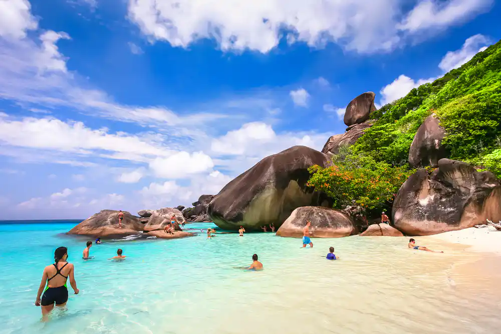
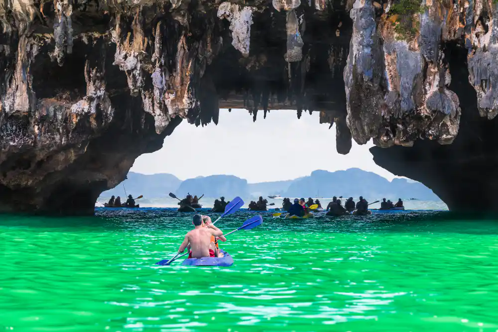
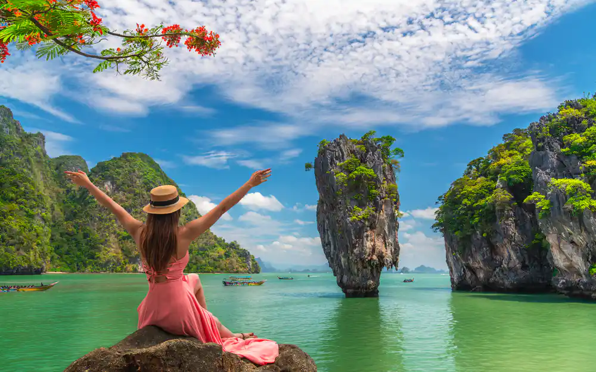
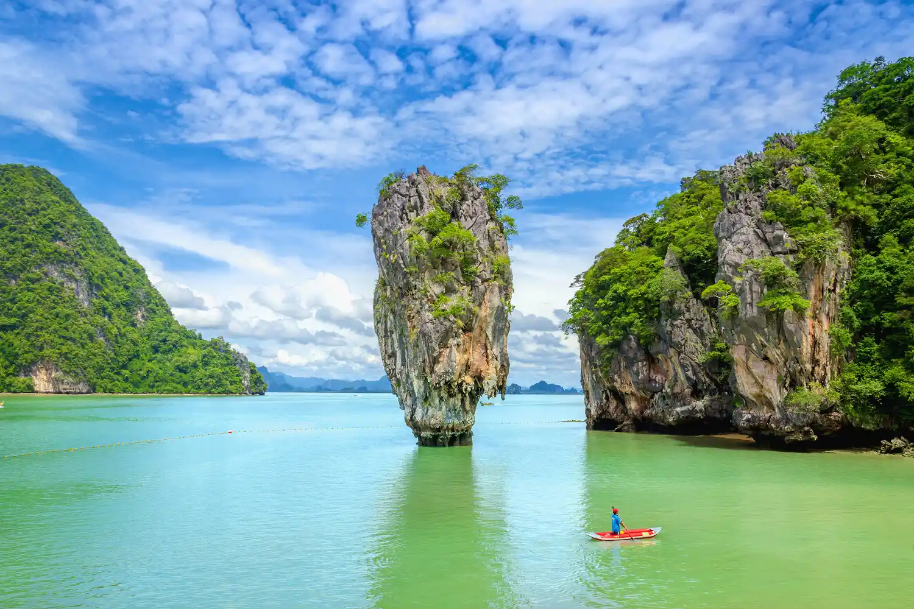

012. Симиланы
Слабый старый файл: 012-similany/gallery-01.jpg - вертикальный 580x800. Его нужно заменить или не использовать в верхней карусели.



023. Джеймс Бонд
Слабый старый файл: 023-dzheyms-bond/gallery-03.jpg - 720x442. Также лучше заменить повторяющийся пляжный gallery-02.jpg.






